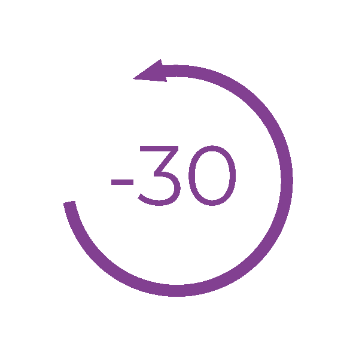
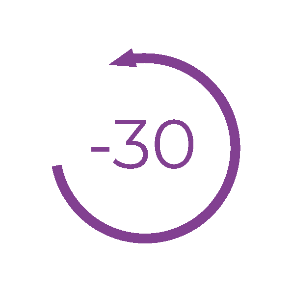

En 1923 surge un grupo secreto dentro de la emblemática escuela de diseño,
arte arquitectura Bauhaus, en Weimar, Alemania.
En este grupo, liderado por el conocido y carismático artista y profesor Paul Klee,
se llevaron a cabo todo tipo de rituales y sacrificios, hasta ahora no des- velados
y que, sin ninguna duda, sorprenderán y despertarán la curiosidad del oyente.

M.H, la testigo de los atroces actos cometidos en las entrañas de la Bauhaus prefiere mantener su identidad en secreto...
El reconocido pintor alemán Paul Klee impartiendo clase sobre teoría del color en la Escuela en una de las aulas de la Bauhaus

Paul Klee. Making Visible libro sagrado para los seguidores de Paul Klee

Estas cajas misteriosas fueron encontradas en el sótano de la Bauhaus, se cree que pertenecían a la secta

Manuel Salcedo Suárez
Abigail Pérez Sanchez
Alba María Espinosa López
Esperanza Macarena Muñoz
Sara Andrades Arjonas
Siguenos en:


Proyecto dirigido por estudiantes de Bellas Artes (Análisis de Proyectos Artísiticos, grupo B),
con la colaboración de estudiantes de Ciencias de la Comunicación (Formatos radiofónicos), con el apoyo y colaboración:

Sitio web creado por el equipo de desarrollo web de EKC23
Aviso Legal | Política de Cookies | Política de Privacidad | Configuración de Cookies
 
 .png)

.png)
.png)